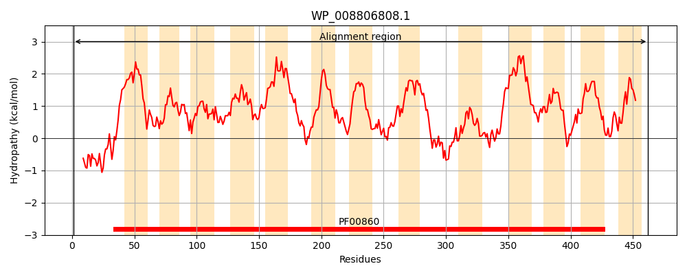
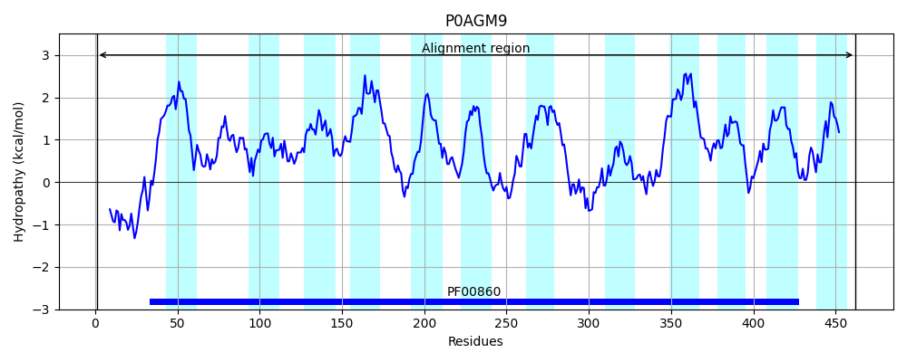
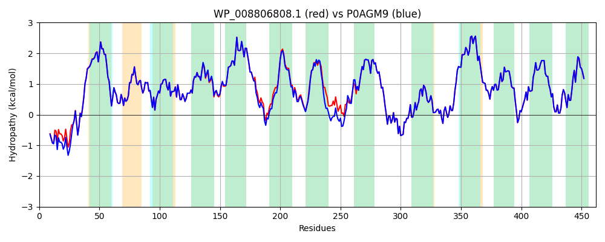

Hit Accession: P0AGM9
Hit TCID: 2.A.40.4.2
Hit Description: gnl|BL_ORD_ID|8871 gnl|TC-DB|P0AGM9|2.A.40.4.2 Putative purine permease yicE - Escherichia coli.
Mach Len: 462
e:0.000000
Query TMS Count : 13
Hit TMS Count: 12
TMS-Overlap Score: 11.450000
Predicted Substrates:CHEBI:10059;9H-xanthine
BLAST Alignment:
Score: 2160 , Bit scores: 836 bits, E-value: 0.0e+00, Alignment length: 462, Percentage identity: 94
Query: 1 MSVNTAESENAQPVAHKSASELIYRLEDRPPLPQTLFAAFQHLLAMFVAVITPALLICQALGLPAQDTQHIISMSLFASGVASIIQIKAWGPVGSGLLSIQGTSFNFVAPLIMGGTALKTGGADVPTMMAALFGTLMLASCTEMVLSRVLHLARRIITPLVSGVVVMIIGLSLIQVGLTSIGGGYAAMADHTFGAPKNLLLAGIVLALIIILNRQRNPYLRIASLVIAMAAGYLAAWFLDMLPANTAPTNSSLITVPTPLYYGLGIDWSLLLPLMLVFMITSLETIGDITATSDVSEQPVSGPLYMKRLKGGVLANGLNSFVSAVFNTFPNSCFGQNNGVIQLTGVASRYVGFVVALMLIVLGLFPAVSGFVQHIPEPVLGGATLVMFGTIAASGVRIVSREPLNRRAILIIALSLAVGLGVSQQPLILQFAPDWLKNLLSSGIAAGGITAIVLNLIFPPEK 462
MSV+T ESENAQPVA SELIYRLEDRPPLPQTLFAA QHLLAMFVAVITPALLICQALGLPAQDTQHIISMSLFASGVASIIQIKAWGPVGSGLLSIQGTSFNFVAPLIMGGTALKTGGADVPTMMAALFGTLMLASCTEMV+SRVLHLARRIITPLVSGVVVMIIGLSLIQVGLTSIGGGYAAM+D+TFGAPKNLLLAG+VLALII+LNRQRNPYLR+ASLVIAMAAGY AWF+ MLP + P LI VPTPLYYGLGI+WSLLLPLMLVFMITSLETIGDITATSDVSEQPVSGPLYMKRLKGGVLANGLNSFVSAVFNTFPNSCFGQNNGVIQLTGVASRYVGFVVALMLIVLGLFPAVSGFVQHIPEPVLGGATLVMFGTIAASGVRIVSREPLNRRAILIIALSLAVGLGVSQQPLILQFAP+WLKNLLSSGIAAGGITAIVLNLIFPPEK
Sbjct: 1 MSVSTLESENAQPVAQTQNSELIYRLEDRPPLPQTLFAACQHLLAMFVAVITPALLICQALGLPAQDTQHIISMSLFASGVASIIQIKAWGPVGSGLLSIQGTSFNFVAPLIMGGTALKTGGADVPTMMAALFGTLMLASCTEMVISRVLHLARRIITPLVSGVVVMIIGLSLIQVGLTSIGGGYAAMSDNTFGAPKNLLLAGVVLALIILLNRQRNPYLRVASLVIAMAAGYALAWFMGMLPESNEPMTQELIMVPTPLYYGLGIEWSLLLPLMLVFMITSLETIGDITATSDVSEQPVSGPLYMKRLKGGVLANGLNSFVSAVFNTFPNSCFGQNNGVIQLTGVASRYVGFVVALMLIVLGLFPAVSGFVQHIPEPVLGGATLVMFGTIAASGVRIVSREPLNRRAILIIALSLAVGLGVSQQPLILQFAPEWLKNLLSSGIAAGGITAIVLNLIFPPEK 462 | Protein Hydropathy Plots: |
|---|
|  |  |
Pairwise Alignment-Hydropathy Plot:
|
|---|
|  |